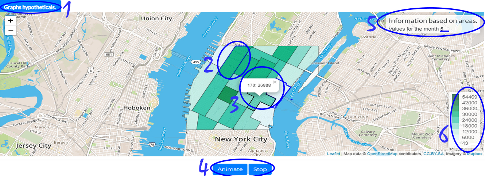
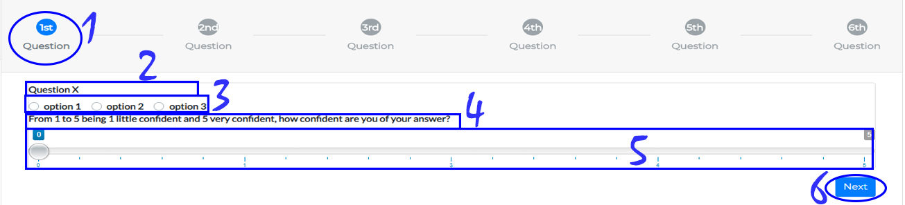

We ask that you participate in this study because you have the right profile to contribute to our research.
- The aim of this study is to find out the most effective way to portray risks and uncertainties for geographic data visualization for people with and without visualization experience (graphs and the like) and statistics (collection, recording and analysis of numerical sample data).
- The possible benefits of this research are to know and learn data visualization types, statistical techniques and possible integrations between both that can help the decision making process by people.
- But there may also be situations where you feel embarrassed and shy about not knowing the answer to a question or because you don't know what to do in the system, as it may be something new to you.
- Your participation is of great value, thank you for your interest.
Financial Incentive for Participation
Nothing will be paid to you and you will not be charged to participate in this research, as acceptance is voluntary, but compensation is also guaranteed in cases of damage, proven to result from participation in the research, according to court or extrajudicial decision.
Basic Instructions
- On the following pages will appear 2 steps of the tool tutorial followed by the Q&A about the tool.
- It is important to carefully read each instruction given.
- When prompted answer the questions properly as taught in the tutorial step.
- Do your best and complete each question as quickly as you can.
About the questions:
- In the next screens you will be introduced the search tool.
- There will be four approaches to map visualization.
- Each approach will be presented below and you will be able to interact before starting the study.
- The order of the techniques in the tutorial may not be the same in the study.
- You will not be informed if you have hit or not.
- Once you submit an answer, you cannot go back to the previous question and change the answer.
- We estimate that it may take between 30 and 40 minutes to complete the questionnaire, so please set aside a time when you can calmly do so.
- Response time will be counted, so please don't take breaks between responses.
- Please do not use calculator, pencil or paper to assemble your answers.
- Please do not search for explanations about hte approaches during this study.
Technical Remarks:
- Before you start the tutorial and questions, we request some information about yourself and your experience with data visualization and statistics. These questions are important to understand better the research context.
- We ask to open this link in the Google Chrome browser.
- Do not reload or turn back the page while filling in the form as it will discard your progress.
- If one approach fails to load immediately, please wait a few seconds.
Data collected
By clicking "Start", you accept and consent to:
- We will use the data from your answers for the development of our research and nothing more.
- The data collected in this study will not be used to identify you.
- You will not be identified in any publication of this study, or in any data shared with other researchers.
- Your participation is confidential.
- You can give up at any time.
- Data is collected only when the form is submitted.
- If you would like more information, or have any questions regarding the research, please do not hesitate to contact us:
(ejs2@cin.ufpe.br,nivan@cin.ufpe.br)
UFPE Ethics Committee
This study is governed by the standards of the Research Ethics Committee Involving Human Beings of UFPE.
It is important that you read and accept the legal terms, which describe the previous points, the terms that are available below, and the research terms will be forwarded to your email for your full protection. FREE AND CLARIFIED CONSENT TERM. CONSENTIMENTO DA PARTICIPAÇÃO DA PESSOA COMO VOLUNTÁRIO(A)
Do you accept the above terms?
If you have any questions regarding the ethical aspects of this study, you can consult the UFPE's Research Ethics Committee Involving Human Beings at: (Avenida da Engenharia s / n - 1st Floor, room 4 - Cidade Universitária, Recife-PE, CEP : 50740-600, Tel: (81) 2126.8588 - email: cepccs@ufpe.br).
You have to accept the terms!
Getting Started - To start we would like knowing a little about yourself.
Please fill in the fields below correctly:
Getting Started
In the next screens you will be introduced the research tool.
There will be four map visualization techniques.
Each technique will be presented below and you will be able to interact before starting the study.
The order of the techniques in the tutorial may not be the same in the study.
When you are ready to proceed just click the button below "Next."
Graphs hypotheticals.
The purpose of this technique is to display a sample extracted from hypothetical (drawn) results from a distribution. For each city, a map is created that becomes a kind of frame in a lively presentation that changes over time giving the impression of a movie. You will need to gather information from multiple frames using the visual system or some more mechanical process such as counting to understand the data. The distribution value represented by the city is mapped as a color to the corresponding city. This view uses a single end color scheme; how high or low is the value of each city in each frame.
When you ready to proceed just click the button "Next".
Graphs hypotheticals.
On this screen you will see the average change over random months. And you must make decisions by observing the behavior of the areas.

The number
1
indicates the name of the technique that is displayed.
The number
2
shows highlighted areas so we can find an area more easily and make decisions about it.
The number
3
shows that hovering over the areas details are displayed.
The number
4
shows the stop and resume animation buttons.
The number
5
contains information regarding the data shown on the map highlighting a month.
The number
6
shows the color legend that classify the area values.
When you ready to proceed just click the button "Next".
Graphs hypotheticals.
You can now interact with the visualization and see how it works.
Note the areas where they are located the areas: 48 and 233.
In which of the two areas will an event of more than 21000 take place?
You can now repeat the process with other areas and values of your choice.
When you ready to proceed just click the button "Next".
Question Template.
Finally you will see the model of the questions that will be asked in the next step where based on the visualizations you should make decisions.

The number
1
indicates the question number that is displayed. Questions that are not currently displayed are blurred.
The number
2
show the question.
The number
3
show answer options.
The number
4
asks you to rate confidence in your answer from 1 to 5.
The number
5
shows the horizontal range where you must slide to choose a value.
The number
6
shows the Next button for the next question and / or step.
Attention!
On the next screen you will see the view about taxi rides in New York - USA.
Once you click the forward button for a question you will not be allowed to go back to the previous question.